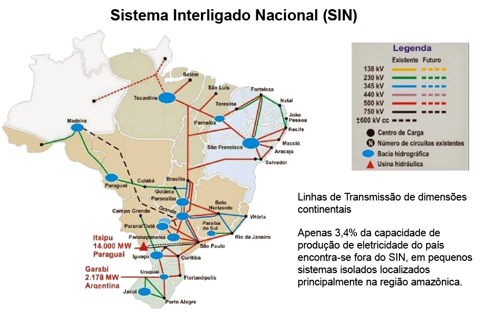
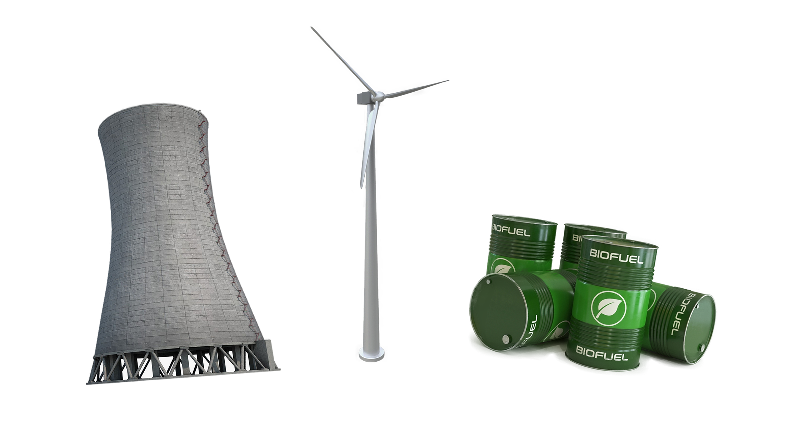

Casos confirmados
12.748.747
óbitos confirmados
321.515
casos recuperados
11.169.937
Incidência
por 100 mil habitantes
6.109,9
Mortalidade
por 100 mil habitantes
154,8
Letalidade
2,5%
Lixo residencial
15% ~ 25%
lixo hospitalar
1000% ~ 2000%
Redução na emissão de gases do efeito estufa
Melhora na qualidade de sistemas aquíferos
Redução na poluição sonora e melhora na qualidade do ar
Restauração da vida selvagem e sistemas ecológicos em geral
Aumento na geração de lixo residencial
Aumento na geração de lixo hospitalar
Aumento do descarte descontrolado de EPI’s
Esforços de reciclagem diminuídos
O Sistema Interligado Nacional vem sofrendo, durante as últimas década, com os níveis de água dos reservatórios das usinas hidrelétricas que o compõem, causando blecautes como o apagão energético de 2001, e a pandemia vem contribuindo com o alívio desse sistema.
Durante a pandemia, tivemos mudanças no balanço do impacto ambiental, alguns pontos melhoraram e outros pioraram, um dos maiores impactos foi no consumo de energia elétrica onde teve uma recessão de 14% na média de consumo 4 semanas após o início da pandemia, no mercado livre, houve uma redução de 18% no período de lockdown, tendo como os maiores responsáveis por essa queda os setores da indústria automotiva e têxtil, mas essa queda é temporária e já há algumas projeções para 2021 onde os níveis de consumo de energia elétrica voltam a crescer e reestabelecer aos níveis anteriores a pandemia.
Portanto é necessário manter essa redução e desenvolver o setor de energia renovável, como usinas nucleares, geradores eólicos em regiões favoráveis, diretivas governamentais voltada para o incentivo do setor primário e secundário a gerar uma parte de seu próprio consumo através de energia solar e eólica, e a transição de combustíveis fósseis para biocombustível, tendo como objetivo ter um sistema de produção mais sustentável e saudável para o meio ambiente.
